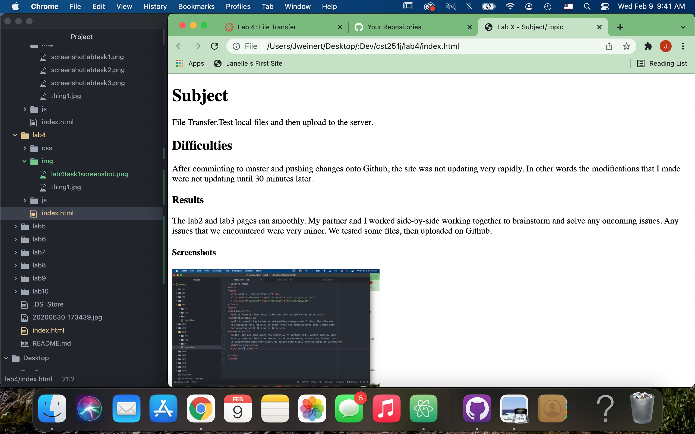
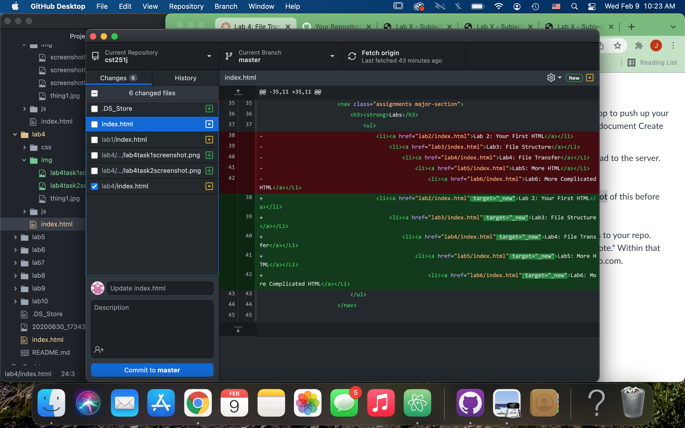

File Transfer: Test local files and then upload to a server.
After comminting to master and pushing changes onto Github, the site was not updating very rapidly. In other words the modifications that I made were not updating until 30 minutes later.
The lab2 and lab3 pages ran smoothly. My partner and I worked side-by-side working together to brainstorm and solve any oncoming issues. Any issues that we encountered were very minor. We tested some files, then uploaded on Github.
First Task:Creating an index.html in lab4 folder.
Second Task:Testing locally.
Fourth Task:Committing to master on Github Desktop.